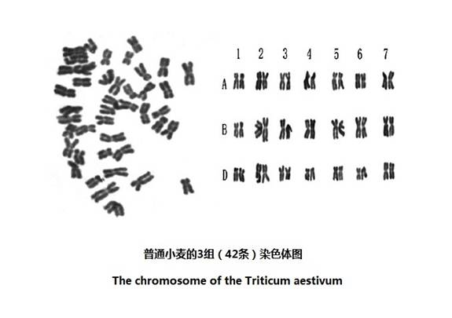

|
六.染色体对数的差异与物种的各从其类
关于人类是否由进化产生的问题，前面各节已经做了充分的论述。人和黑猩猩染色体对数的差别，是进化无法跨越的鸿沟。而且，也不可能是通过骤变来实现的。在其它的动物起源上，染色体对数同样是进化不可跨越的鸿沟。每一个染色体都是一个DNA编码的序列，染色体对数的差异，也就是DNA编码的差异，而且是巨大的差异。对染色体对数的分析，也是对DNA解码的分析，是“DNA编码与解码之物种起源学”重要的研究内容。
常见哺乳动物的染色体数目（条数）
从上面的表格中，可以看到不同动物染色体数目的差别。进化论无法解释进化如何能够跨越这些“染色体数目的鸿沟”。由于相同物种内的各个体，有着极其一致的DNA序列，每一个物种都是来自唯一的个体。因此，骤变论也无法解释，如何能骤变出唯一的个体，如何能取代巨大的群体。正如前面几节从人的来源所论证的那样，DNA编码和染色体数目的差别已经终结了进化论和骤变论。在其它物种上，也是同样的结论。
图10-2是进化论下，各动物和人的进化树状图。它是为了描述一切生物都有着进化的联系，全都来自同一个根。但是，当给出了各种动物的染色体数目后，它们彼此之间已经被“鸿沟”所隔绝，不可能有进化的联系。
虽然有少数动物的染色体数目相同，但是由于染色体和线粒体DNA编码的差别，仍然不可能有进化的联系。例如，狮子和老虎有同样的染色体对数，它们虽然可以交配产生出下一代的狮虎（或虎狮），依然不可能产生出狮虎（或虎狮）的物种。这就是DNA因素的物种隔离，如果没有这种严格的隔离，世界上就会出现千千万万种、奇奇怪怪的人和动物。
结论是：各种生物都是源自各自的“一对源父母”，“源父母”相互之间，完全没有进化连接的关系。

图10-2 被染色体对数鸿沟阻断的进化树
（点击看大图）
七.欧洲鳗鱼和美洲鳗鱼有序的一生

图10-3 鳗鱼的生命历程
鳗鱼是一种很特殊的鱼类，尽管关于鳗鱼已经有超过6500种的出版物，它的生命史仍然是一个谜。在长达一千多年的历史中，人们根本不知道鳗鱼在什么地方诞生，只知道在河流海口的地方可以捕捞到鳗鱼苗，这些鳗鱼苗可以人工养殖，成为商品。多年的研究，才初步认识了它们生命的历程。
以美洲鳗鱼和欧洲鳗鱼为例，这两种鳗鱼都诞生于大西洋的马尾藻海（Sargasso Sea）。马尾藻海只是被几条主要洋流围出的一个特定的区域，是一个“洋中之海”，也是世界上唯一一个没有海岸线的海。也许是因为在这个海面上，漂浮着大量马尾藻，使它成为了鳗鱼的产卵之地。一条条诞生的小鳗鱼，从这里开始了它们的生命历程。
小鳗鱼出生时只有3毫米长，随着海洋的洋流漂泊逐渐长大。可能是在长到20几毫米以后，才具有了掌握方向的能力。大约经过一年多的时间，美洲鳗鱼苗到达美洲沿岸的河口。而欧洲鳗鱼苗要经过两年左右，才能到达欧洲的河口，这是真正的万里长征。此时的小鳗鱼才长到70多毫米长，身体有些透明，因此被叫做玻璃鳗。玻璃鳗进入河流，逆流而上，开始了它们大半生的淡水生活。
几年以后，它们长成近一米长的成熟鳗鱼，由于身体呈现黄色，被称作“黄鳗”。此时，一个不为人知的信息在它们心中苏醒，呼唤着它们开始了返回它们出生地的旅程。它们在河流中顺水而下，进入到大西洋。和幼年不同的是它们有了较强的游泳能力，加上海水“洋流”的作用,使它们可以在半年多的时间内,回到它们的出生之地―马尾藻海。在这样的旅途上，长期的体力消耗使它们变瘦、眼睛变大，皮肤由黄变成银色，因此被称为“银鳗”或“大眼睛鳗鱼”。
当它们到达马尾藻海后，雌、雄鳗鱼将完成它们生命中的最后使命，产卵和排精。新的生命诞生的时期，也是鳗鱼母亲和鳗鱼父亲生命的最后时期。它们的出生之地，成为了它们的葬身之地。
美洲鳗(Anguilla rostrata) 和欧洲鳗(Anguilla anguilla) 以奇特的生活史吸引着众多从事鱼类研究的学者。它们在同一个海区诞生，大半生分别在各自大陆的淡水溪流中度过，成熟后便开始了长途迁徙，回到它们共同的诞生地，几乎在一起产卵繁殖。半个世纪以来，人们一直在发出疑问：它们既然在同一水域繁殖，其交配是随机的吗？它们有着杂交吗？它们是否都有着各自生命旅程的路线呢？如果是这样，它们是如何找到它们巡回的路线呢？这些问题长期困扰着众多的学者。
当分子人类学家通过DNA解码，来寻找人类来源和迁徙历程的时候，鱼类科学家们自然也想到了DNA解码这个具有权威的方法。美国佐治亚大学（University of Georgia）的教授JOHN C. Avise等，付出了很大的努力，发表了报告“北大西洋鳗鱼线粒体的差异”“Mitochondrial DNA differentiation in
North Atlantic eels”[注释5]
在这个报告中，分析了美洲鳗鱼和欧洲鳗鱼的线粒体DNA序列，发现各地区美洲鳗鱼线粒体DNA序列高度一致。他们从美国最北部的缅因州到南部路易斯安娜州的7个地点，取得了109个美洲鳗鱼线粒体DNA的样本。从每个样本中，得到了55个DNA有效片段，包含了389个碱基对。
虽然这些鳗鱼样本分布在4000公里的海岸线上，它们的线粒体DNA都极为一致。在109个样本中，有73个样本的碱基字符，一字不差。其余30个样本，仅仅包含一个字符的差异。显示美洲鳗鱼非常可能是出于一个雌鳗鱼，即有一个“线粒体鳗鱼祖母”。
欧洲鳗鱼的线粒体DNA和美洲鳗鱼线粒体DNA编码十分一致，也有着差异（多态性 SNP），因此能够加以区分。尽管两种鳗鱼在一起产卵，但它们几乎没有发生混合。至于美洲鳗鱼和欧洲鳗鱼的关系，从线粒体DNA上来看，有44个片段碱基字符相同，占片段数目的60%。有可能它们是出于一个共同的线粒体的“起始源个体”，即有一位“起始的鳗鱼祖母”，但是还需要更多的染色体、线粒体DNA的编码来证实。
美洲鳗鱼和欧洲鳗鱼两个族群，它们各有各的巡游路线。它们一代代的遵循各自的几千哩的旅程，去同一个区域中交配产卵，却从不混合。它们的幼鱼，各回各家，从不谜失，这里充满着无法理解的生命奥秘。显然，在同一个大西洋中，即使是欧洲鳗鱼去了美洲，或美洲鳗鱼到了欧洲，也决不会无法生存。从人类DNA编码中承载着“非物质的遗传信息”的事实，可以推论到鳗鱼身上，应该是鳗鱼DNA编码上的“非物质的遗传信息”，决定了各自的生命历程。因此，在美洲海岸没有发现欧洲鳗鱼，在欧洲也没有发现美洲鳗鱼。它们多少万年、多少代，都有着同样规律的一生，这些都是进化论无法解释的事实。
DNA解码说出了生命的起源，但有关生命的来源以及类似鳗鱼这些习性包含的秘密，仍然是科学之谜。可以肯定地说，人们将永远无法从科学上得知生命的全部奥秘。
八．小麦的祖先
现在，再来看一看植物的DNA编码。首先，让我们来关注和人类关系最为密切的小麦。
农学家们一致地认为，目前的普通小麦，是原始的小麦“一粒小麦”（Triticum monococcum）和其它两种杂草杂交出来的品种。“一粒小麦”是14条染色体，当和山羊草（Aegilop Spp）（14条染色体）杂交后，生成28条染色体的“二粒小麦” （Triticum dicoccoides ）。“二粒小麦”再与节节草 （Aegilops squarrosa）（14条染色体）杂交，就生成了42条染色体的普通小麦(Triticum aestivum L)。普通小麦实际包含了3个（A、B、D）基因组，也就是上面所说3个物种的3套染色体。每套染色体都有14条染色体，它们独立地存在于普通小麦细胞内，共同控制着普通小麦的生长。
无论是自然杂交或人工杂交育种，都不是进化的过程。因为不符合“经过无数的、连续的、轻微的变异形成的”这个进化论原则。
早在上世纪70年代，有些农学家就提出A基因组起源于一粒小麦（Triticum monococcum）, 而另外一些学者却认为乌拉尔图小麦（Triticum urartu）才是A基因组的真正供体。野生的“一粒小麦”发现于新月沃土地区石器时代的遗址中，约公元前7000年左右在今土耳其东南部地区开始被人工栽种。乌拉尔图小麦最早也分布在那个区域。
这个争论已经持续了几十年了，哪一个看法是正确的呢？谁是现代小麦的真正的祖先呢？显然，最好的、也是最简单的解决方法，仍然是依靠DNA解码。
下面是来自美国NCBI的GenBank的三组DNA编码，它们分别是：一粒小麦（Triticum monococcum）、乌拉尔图小麦（Triticum urartu）和来自中国的普通小麦的基因样本。（图中X表示该位点的DNA编码缺失）
（1）样本#1：一粒小麦（Triticum monococcum），5.8S rRNA gene ，
VERSION AJ301800.1 PLN 19-NOV-2000 1 tcgtgaccct gaccaaaaca gaccgtgcac gcgtcatcca atccgtcggc gatggcattg 61 tccgtcgctc ggccaatatg cctcgaccac ctcccctcct tggagtgggt gggggctcgg 121 ggtaaaagaa cccacggcgc cgaaggcgtc aaggaacact gtgcctaacc cgggggcatg 181 gctagcttgc tagccatccc ttgtgttgca aagctattta atccacacga ctctcggcaa 241 cggatatctc ggctctcgca tcgatgaaga acgtagcgaa atgcgatacc tggtgtgaat 301 xxtgcagaat cccgcgaacc atcgagtctt tgaacgcaag ttgcgcccga ggccactcgg 361 ccgagggcac gcctgcctgg gcgtcacgcc aaaacacgct cccaaccccc tcatcgggaa 421 tcaggatgcg gcatctggtc cctcgtctcg caaggggcgg tggaccgaag atcgggctgc 481 cggcgtaccg cgccggacac agcgcatggt gggcgtcctc gctttatcaa cgcagtgcat 541 ccgacgcgca gccggcatga cggcctcaaa atgacccagc aaactgcaag cgcacgtcgc 601 ttcgccc
（2）样本#2：乌拉尔图小麦（Triticum urartu ），5.8S rRNA gene,
VERSION
AJ301803.1 PLN
19-NOV-2000
1 tcgtgaccct gaccaaaaca gaccgtgcac gcgtcatcca atccgtcggc gacggcattg 61 tccgtcgctc ggccaatatg cctcgaccac ctcccctcct tggagtgggt gggggctcgg 121 ggtaaaagaa cccacggcgc cgaaggcgtc aaggaacact gtgcctaacc cgggggcatg 181 gctagcttgc tagccatccc tcgtgttgca aagctattta atccacacga ctctcggcaa 241 cggatatctc ggctctcgca tcgatgaaga acgtagcgaa atgcgatacc tggtgtgaat 301 xxtgcagaat cccgcgaacc atcgagtctt tgaacgcaag ttgcgcccga ggccactcgg 361 ccgagggcac gcctgcctgg gcgtcacgcc aaaacacgct cccaaccccc tcatcgggaa 421 tcaggatgcg gcatctggtc cctcgtctcg caaggggcgg tggaccgaag atcgggctgc 481 cggcgtaccg cgccggacac agcgcatggt gggcgtcctc gctttatcaa cgcagtgcat 541 ccgacgcgca gccggcatga cagcctcaaa atgacccagc aaacxxgaag cgcacgtcgc 601 ttcgacc
（3）样本#3：中国普通小麦中国小麦Triticum aestivum，5.8S rRNA gene
VERSION FJ229969.1 PLN 30-SEP-2009 1 tcgtgaccct gaccaaaaca gaccgtgcac gcgtcatcca atccgtcggc gacggcattg 61 tccgtcgctc ggccaaxxtg cctcgaccac ctcccctcct cggagtgggt gggggctcgg 121 ggtaaaagaa cccacggcgc cgaaggcgtc aaggaacact gtgcctaacc cgggggcatg 181 gctagcttgc tagccatccc tcgtgttgca aagctattta atccacacga ctctcggcaa 241 cggatatctc ggctctcgca tcgatgaaga acgtagcgaa atgcgatacc tggtgtgaat 301 gatgcagaat cccgcgaacc atcgagtctt tgaacgcaag ttgcgcccga ggccactcgg 361 ccgxxggcac gcctgcctgg gcgtcacgcc aaaacacgct cccaaccccc tcatcgggaa 421 tcaggatgcg gcatctggtc cctcgtctcg caaggggcgg tggaccgaag atcgggctgc 481 xxgcgtaccg cgccggacac agcgcatggt gggcgtcctc gctttatcaa cgcagtgcat 541 ccgacgcgca gccggcatga tagcctcaaa atgacccagc aaacgaagcg cacgtcgctt 541 ccgacgcgca gccggcatga cagcctcaaa atgacccagc aaacxxgaag cgcacgtcgc 601 ttcgacc
当我们比较了这6百多个DNA编码序列以后，我们根据“DNA骰子”理论，可以毫不犹豫地说，这3个序列，它们都有一个原始的祖先：即唯一的一颗原始的“麦粒”。这颗原始的“麦粒”，就是“一粒小麦（Triticum monococcum）”的起始祖先。我们已经重复了很多次这个论断：随机地产生第二个如此一致的DNA编码，是不可能的。和动物不同的是，普通小麦是3个祖先结合的产物。这三个祖先DNA编码不是互相地转化，也不是相互的融合，而是各自独立地存在于同一个细胞核中，共同控制着小麦的生长。普通小麦已经有上万年的历史，在这几万年中，有多少粒小麦被繁殖出来，每一株小麦又有多少次的DNA复制过程。令人惊叹的是42条染色体在细胞中，都各自独立地复制，各染色体的编码序列，几乎没有什么改变。正是因为这样，我们才能看到基本相似的一粒粒的小麦。
 图10-4 普通小麦的3组（42条）染色体图
这会是真的吗？其实，从一般道理上也可以看出，这会是真的。前面已经讲过，我们每一个人都是在60亿编码的“调控”下，生长壮大的。我们有极其相似又有微小差别的编码，才有着各个人的样式。当你去查看小麦的麦粒时，你也会发现它们是多么的相似。如此的相似，也必然是有着极其相似的编码。有着极其相似的编码，就意味着这不可能是在“进化理论”下，由随机形成的一致。那么，这极其相似的编码，就标志着它们全是由最早的一组编码复制而来。
上一页 1 2 3 4 下一页 回主页
|
{kind=link}